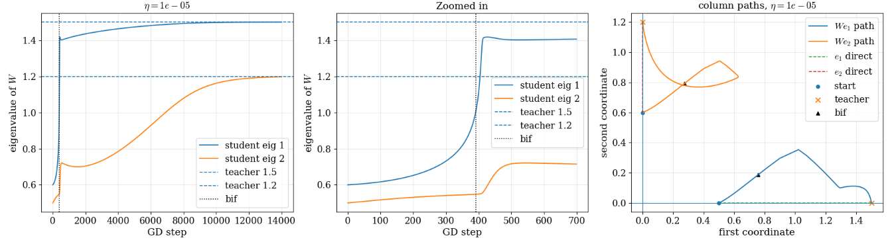
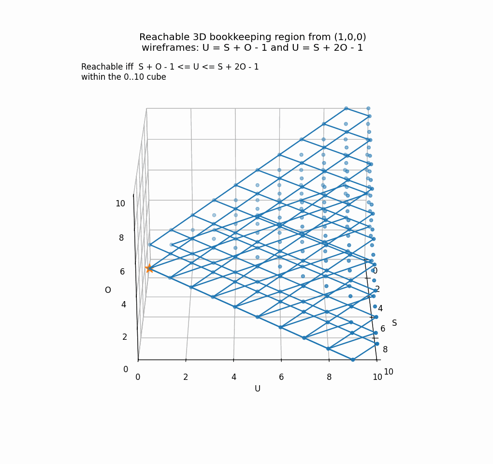

Bifurcations During GD: Fractal Tunnel Vision!
| Relevant Links | |
| Workshop Pre-Print | Pip Pytorch Package |
We train a dynamical system with gradient descent (GD) and look at the loss and what do we see? A bunch of sudden loss drops, periods of slow learning, and, often the case, a crappy final loss. Prior work showed that the drops can coincide with dynamical bifurcations: an event in which the dynamics change very suddenly, e.g., a fixed point splits into multiple fixed points or a limit cycle.
Central Findings
(1) Bifurcations are associated with complicated, fractal geometry even in very simple, scalar-valued normal forms, which capture the range of classical codimension-one bifurcations. The also cause massive amplification of sensitivies related to learning.
(2) In high-D models, the massive amplification of bifurcations cause learning to become rank-one and predictable local to bifurcations, with an exact rank-one space-time basis defined by the normal form analysis. The formal procedure for this, including locality and error quantification, we call center-manifold reduction of learning.
(3) This rank-one local learning near bifurcations causes a "bifurcation-induced tunnel-vision," whereby there is an over-reliance on a single rank-one parameter mode, which causes tasks to be misdirected during the period where the bifurcation-relevant learning occurs and dominates.
I'll try to keep things intuitive with examples (e.g., symmetric linear RNN) to motivate the more general results. At the end I'll present some more detailed experiments. And throughout, especially in the normal form case, I'll try to make some cool plots. Get ready to immerse your self in lots of local--practically observed, but a pain to actually prove--math!
We will discuss discrete dynamical systems of the form $$h_{t+1} = f(h_t, \theta)$$ where the task is specified by the choice of sample initial conditions, to evaluate the model on, as well as some loss function, mapping trajectories to a scalar loss. Specifically, assuming each trajectory has \(T\) timesteps, there are \(B\) initial conditions (batch size) and \(h_t \in \R^n\), then the global state here is a 3-tensor in \(\hs H := \R^{B \times T \times N}\).
But what about task structure? E.g., can we account for a dynamical system of the form $$h_{t+1} = f(h_t, \theta, x_t)?$$ Well, if we define a new state \(v := \text{cat}(h, x)\), expanding the state-space, assuming \(x_t\) has its own discrete dynamics, this matches the form above. I.e. we can fold task inputs into the model. This is a little bit less simple from the gradient flow perspective since \(x\) does not technically evolve over GD, but for now let's just use the form above and forget about it.
Summary/Structure of this Blog
How should we understand bifurcations?
(1) We'll first study normal forms: simple scalar systems where we can see exactly how GD behaves near a bifurcation.
(2) We'll then turn to high-dimensional models, arguing that these scalar analyses still matter because bifurcations locally reduce learning to a low-rank, normal-form-like geometry.
(3) Finally, we will discuss the consequences: bifurcations funnel learning into a narrow direction, slowing progress on other task components and making the order of learning matter.
Reviewing Normal Forms
To understand bifurcations, the natural tool is the normal form, which is a simple model capturing a bifurcation's behavior. There are dynamical systems of the form $$\alpha_{t+1} = f(\alpha_t, \mu)$$ where \(\alpha_t, \mu \in \R\) are scalar, \(\alpha\) is the state, \(\mu\) is the bifurcation parameter. At \(\mu = 0\) we assume there is a bifurcation as described below. These can be used to describe codimension-one bifurcations, which are the most frequently occuring when training a model, from a "this event requires few things to line up" perspective.
Codimension-one bifurcations occur when, local to a fixed point \(\bar \alpha\), where \(f(\bar \alpha, \bar \theta) = \bar \alpha\) for some \(\bar \theta\), the Jacobian \(D_\alpha f(\bar \alpha, \bar \theta)\) has an eigenvalue pass through the unit circle, \(|\lambda| = 1\), in the complex plane.
In continuous time, the condition is instead a crossing of an eigenvalue through zero.
Correspondingly, there are actually only at most six unique codimension-one bifurcations for a discrete non-linear dynamical system, and four for a continuous-time non-linear dynamical system.
Here's a simple figure laying out the discrete ones.
Fig 1 Classifying discrete bifurcations.

Here's a table of the normal forms, all laid out so that the bifurcation happens at critical parameter \(\mu = 0\):
| Name | Normal form, bif at \(\mu = 0\) | Qualitative behavior near \(\mu = 0\) |
|---|---|---|
| Saddle-node | \(\alpha_{t+1} = \alpha_t - \mu - \alpha_t^2\) | For \(\mu < 0\), two fixed points exist: one stable, one unstable. At \(\mu = 0\), they collide and disappear. |
| Transcritical | \(\alpha_{t+1} = (1 + \mu)\alpha_t - \alpha_t^2\) | Same number of fixed points, but they exchange stability at \(\mu = 0\). |
| Pitchfork | \(\alpha_{t+1} = (1 + \mu)\alpha_t - \alpha_t^3\) | For \(\mu > 0\), two new stable fixed points appear: \(\alpha^* = \pm\sqrt{\mu}\). The origin becomes unstable. |
| Flip | \(\alpha_{t+1} = -(1 + \mu)\alpha_t - \alpha_t^3\) | Fixed point stays the same, but loses stability at \(\mu = 0\); with this sign, this is the subcritical flip case. |
| Neimark–Sacker | \[ z_{t+1} = (1 + \mu)e^{i\omega} z_t - |z_t|^2 z_t \] | Fixed point stays the same, but loses stability at \(\mu = 0\); for \(\mu > 0\), an invariant circle / quasiperiodic orbit appears. |
GD Learning for Scalar-Valued Normal Forms
Normal forms can be written $$\alpha_{t+1} = f(\alpha_t, \mu)$$ where \(\alpha_t\) here is a scalar and so is \(\mu\). We assume \(\mu = 0\) produces the bifurcation. Typically, one then draws a bifurcation diagram, plotting, versus \(\mu\), the fixed points of the normal form. Here is the pitchfork example, big surprise, it looks like a pitchfork!

Fig 2 Fixed points of the pitchfork.
Training But what if we trained the model? For example, consider a student-teacher setup, where we have two models with identical normal form dynamics $$\alpha_{t+1} = f(\alpha_t, \mu)$$ but with the student initialized so that \(\mu = \mu_0\) and with fixed teacher parameter \(\mu = \mu^*\). We denote the student by \(\alpha_t\) and teacher by \(\alpha_t^*\), simulating both for \(T-1\) timesteps on the same IC, or ensemble of ICs, and define a loss based on how much they match. For example, assuming a single IC for simplicity, we define a running MSE loss $$L(\alpha) := \frac{1}{2}\mathbb{E}_{t=0}^{T-1} [ \| \alpha_t - \alpha_t^*\|^2]$$ or a terminal loss just comparing the final times. I'll prefer and use the former here. With this loss acquired, we can run GD on \(\mu\). This is a nice setup because it's clear that the simplest solution is to continuously push \(\mu\) from \(\mu_0\) to \(\mu^*\), but, since the loss compares trajectories, not parameters, we can quantify how much GD is biased and screws up this task.
Let's examine the loss landscape of the task, which depends on the choice of \(\mu\), the timeframe \(T\), and the sample IC \(\alpha_0\).
\(d_\mu \alpha\) Amplifcation
The key object that translate error signals into updates to the parameters, \(\mu\) is the derivative \(d_\mu \alpha\). Here I use \(d\) since \(\mu\) is a scalar valued quantity. Note \(\alpha\) is the unrolled state for a single IC choice in this simple case, i.e., it can be seen as a vector in \(\R^T\), so \(d_\mu \alpha\) is a row-vector of length \(T\).
As will become aparent below in the high-D case, we'd like to understand the behavior of \(d_\mu \alpha\) around the bifurcation, specifically to understand how it gets amplified. We can measure the amplification of learning as \(\|d_\mu \alpha\|\), the norm of this row vector, for a varied range of \(\mu\) and \(\alpha_0\) choices, looking at the behavior around the \(\mu = 0\). What I find is that this quantity grows rapidly around the bifurcation, meaning that learning with a fixed SGD learning rate would experience much larger steps around the bifurcation. Importantly, in the high-D case, this means that a scalar-valued bifurcation can cause the geometry of learning to become rank-one, dominated by the bifurcation, highly amplified, and misdirect learning on subtasks.
The figure below plots \(\|d_\mu \alpha\|\) for varied \(\alpha_0\) and \(\mu\) values, unrolling the model for \(T = 25\) steps. Note, in particular, the massive amplification in every case at the \(\mu = 0\) boundary. Note dark blue points correspond to extreme amplifcation above \(10^7\). "Training" the parameter \(\mu\) for any of these five normal forms consists of iteratively perturbing \(\mu\) along a horizontal slice given a fixed IC \(\alpha_0\). Thus, we see that training is perilous and likely to fail near bifurcation boundaries and beyond (e.g., the pitchfork).

Fig 3 For each normal form, the state is \(\alpha\) and the parameters are \(\mu\), with a bifurcation at \(\mu = 0\) (see table above). For each bifurcation type, we plot the norm \(\|d_\mu \alpha\|\), where \(\alpha \in \R^T\) is the state of the model, unrolled over \(T = 25\) timesteps, with a fixed IC \(\alpha_0\) (y-axis) and fixed parameter \(\mu\) (x-axis). Dark blue points in correspond to amplification above \(10^7\), i.e. regimes where learning would become basically impossible due to severe exploding gradients. Vertical green dashed line denotes the bifurcation boundary and white lines denote fixed points (dashed for unstable). Bottom right panel plots the sample slice at \(0.001\) for the five cases, showing the ampkifcation at \(\mu = 0\). Plots cut off when the amplification is \(> 10^7\) in this case (marked with the infinity symbol).
Green's Propgator Amplification
The following section is more of an artifact from earlier analysis looking at the Green's propagator, not \(d_\mu \alpha\) itself. We get nice plots but feel free to skip it!
We define \(\op P\) as the Green's operator on \(R^{1 \times T \times 1}\) defined as the block matrix $$\op P = \begin{pmatrix} \Phi(0, 0) & 0 & \dots & 0 \\ \Phi(1, 0) & \Phi(1,1) & \dots & 0 \\ \vdots & \vdots & \ddots & \vdots \\ \Phi(T-1, 0) & \Phi(T-1, 1) & \dots & \Phi(T-1, T-1) \end{pmatrix}$$ where \(\Phi(t, s)\) is the state-transition matrix, \(\Phi(t, s) = D_{\alpha(s)} \alpha(s)\), which is scalar valued in this normal form case. Here, \(\op P\) is simply a \(T\) by \(T\) matrix, and it describes the linear integration of perturbations to the forcing, i.e. \(\op P : \delta f \mapsto \delta \alpha\). Crucially, we have in this case $$\delta \mu = \mathbb{E}_{t=0}^{T-1} [\alpha_t a_t] \text{ using the adjoint signal } a := \op P^T (\alpha^* - \alpha)]$$ In non-scalar cases, we instead have an outer product. See my previous blog for more details. We define the amplification landscape by simply measuring \(\|\op P\|_F = \sqrt{\sum_{0\leq s \leq t}^{T-1} \|\Phi(t, s)\|_F^2}\), where the Frobenius norm is just absolute value in this scalar simple case. The cool thing is that the operator \(\op P\) does not care about the task error, so the landscape tells us generally "how steep is learning at this point," and, in higher-D cases, how biased/stiff is it towards only a few modes.
As in my prior work, we have that \(d_\mu \alpha = \op P^T(d_\mu f)\), i.e. it arises from applying \(\op P^T\) to a specific signal, so \(\op P^T\) is a more generic object telling us the amplification geometry more broadly.
Below, I plotted the amplification, \(\| \op P\|_F\), as well as the loss landscape for the pitchfork, with teacher parameter \(\mu^* = 1\) fixed. Amazingly, this very simple scalar-valued state and parameter case yields wild, fractal patterns in the amplification landscape and consequently the loss landscape.

Fig 4 Amplification landscape (left) and loss landscape (right) for the pitchfork. Rows correspond to choices of \(T\), the timesteps of evaluation. In each plot, the vertical axis corresponds to \(\alpha_0\) IC choice, while the horizontal corresponds to \(\mu\) value. Loss is evaluated with teacher \(\mu^* = 1\) fixed. White regions correspond to nan/inf. Lines illustrate FPs, as in the previous figure.
These plots tell us a lot. E.g., (1) there is a region, the white parts, where learning with that IC and \(\mu_0\) value is doomed to fail from extreme exploding gradients. (2) This same phenomenon is also an issue for large \(\mu\), regardless of the teacher \(\mu^*\), also exhibiting chaos and exploding in that region. (3) Furthermore, the loss landscape approaching from the right is hard to traverse, and from the left there is a sudden jump around the upper and lower fixed point boundary.
One might think that the amplification is determined by asymptotics, but this is surprisingly untrue. Specifically, all asymptotic paths, except at \(\alpha = 0\) with \(\mu > 0\), converge to a stable FP with Jacobian smaller than 1, so that $$\lim_{T \rightarrow \infty} \Phi(T, s) = 0$$ so the amplification \(\| \op P\|_F\) is determined by the transient period in which the dynamics are far enough from a stable FP so that the Jacobians involved actually contribute something that makes it not collapse.
Here, you can play with the landscape for the \(T = 5\) case.
Fig 5 Amplification surface for T = 5, pitchfork bifurcation (link).
Reducing the High-D Case to Normal Forms
Normal forms are cool and produce nice plots and all, but if they don't predict learning dynamics in high-D, they're not so useful for understanding GD in real models. Near codimension-one bifurcations, the formal procedure for projecting bifurcation-relevant dynamics to a normal form is referred to as center-manifold reduction. Here, we will look at how GD itself, i.e. the learning operators, reduce near a bifurcation, while I'll refer to as center-manifold reduction of learning.
TL;DR: (Condition 1) If \(D_\mu \alpha\) for a normal-form \(\alpha\) depending on \(\mu\) dominates, the Jacobian \(D_\theta h\), Fisher information and NTK are rank-one. Furthermore, (Condition 2) if \(D_\mu h \approx D_\mu \alpha\), assuming weak cross-talk of the bifurcation on residual dynamics, the high-D Green's propagator, \(\op P\), is given by a rank-one separable tensor product that is easy to compute.
Consider a high-dimensional dynamical system, of the form $$h_{t+1} = f(h_t, \theta)$$ with \(B\) sampled ICs, simulated for \(T-1\) steps, so that \(h \in \hs H := \R^{B \times T \times N}\) can be seen as the 3-tensor, which I call the "empirical global state." We assign it a loss function, which might include some metadata, e.g., targets, $$\op L : \hs H \rightarrow \R$$ For example, in a student-teacher scenario, as above, $$\op L_{mse}(h) := \frac{1}{2}\mathbb{E}_{b,t}[\|h_{b,t} - h^*_{b,t}\|^2]$$ where \(h^*\) is some deterministic target trajectory dependent on the same sample ICs.
Near a bifurcation at a fixed point \(\bar h\) we break up coordinates into bifurcation relevant parameter \(\mu \in \R\) and residual parameters \(R \in \R^{m-1}\) so that we get the reduced dynamics $$h = \bar h + \alpha(\mu) \otimes v_{bif} + \varepsilon(\alpha, \mu, R)$$ Here, \(\alpha_t\) describes the one-dimensional dynamics along the direction \(v_{bif}\) relevant to the bifurcation, which is defined by the normal form, and \(\varepsilon_t\) captures everything else, i.e. the behavior not local to the bifurcation. Note that we assume \(\alpha\) depends solely on the 1D bifurcation parameter \(\mu\), while \(\varepsilon\) depends on \(\mu, R\) and on \(\alpha\) itself.
The key quantity of learning is \(\nabla_\theta L\), i.e., how do parameters change. But really we care more about how parameters change in the bifurcation-relevant and residual parameters change. Define the error signal $$\err := \partial_h L$$ Where \(\partial_h L\) means "forget the fact that \(h\) depends on prior states," e.g., for the MSE loss above, \(\partial_h L_{mse} = h - h^*\). Then, $$\nabla_\mu L = [D_\mu h]^T(\err); \quad \nabla_R L = [D_R h]^T(\err)$$ Now, we see by the chain rule $$d_\mu h = d_\mu \alpha \otimes v_{bif} + (d_\mu \epsilon + D_\alpha \epsilon \cdot d_\mu \alpha)$$ The first term is exactly predicatable by the normal form, as we'll delve into below. The middle term can be bounded by assuming state and parameter locality near the bifurcation. The third term describes cross talk: if changes to \(\alpha\) have a very strong effect on the bifurcation-irrelevant directions, it becomes isolate everything simply to the bifurcation-relevant part. Finally, $$D_R h = D_R \varepsilon$$ We see that if \(d_\mu \alpha\) is much larger than \(D_R h\), then this term dominates learning, i.e. \(D_\theta h\) is dominated by the rank-one term \(d_\mu h\). Furthermore, if \( d_\mu \alpha\) does not cause much cross-talk with the residual dynamics, i.e. if \(D_\alpha \epsilon \cdot d_\mu \alpha\) is small relative to it, then, $$D_\mu h \approx d_\mu \alpha \otimes v_{bif}$$ In other words, learning is concentrated to the simple learning described by this separable, rank-one field, with \(d_\mu \alpha\) predicatable exactly by the normal form and \(v_{bif} \in \R^N\) describing the bifurcation direction, local to the fixed point.
detailed discussion (skip!)
Below is a more detailed discussion.
Near a bifurcation at a fixed point \(\bar h\), we split the parameters into two groups. The first is the bifurcation-relevant parameter, which we call \(\mu\). The remaining parameters are collected into \(R\). Intuitively, \(\mu\) moves us toward or away from the bifurcation, while \(R\) moves us in directions that are not primarily responsible for the bifurcation.
We also split the trajectory itself into a bifurcation-relevant part and a residual part:
$$h=\bar h+\alpha(\mu)\otimes v_{\mathrm{bif}}+\varepsilon(\alpha,\mu,R).$$
Here, \(v_{\mathrm{bif}}\) is the state-space direction involved in the bifurcation, and \(\alpha\) is the scalar trajectory along that direction. Everything else is absorbed into \(\varepsilon\). So \(\alpha\) is the simple one-dimensional object described by the normal form, while \(\varepsilon\) represents all the messy high-dimensional behavior that is not captured by the bifurcation coordinate alone.
For the cleanest version of the argument, assume that \(\alpha\) depends only on \(\mu\). The residual term \(\varepsilon\), however, may still depend on \(\alpha\), \(\mu\), and \(R\). This assumption means that the main bifurcation coordinate is controlled by the bifurcation parameter, while the residual parameters affect only the residual part of the trajectory.
The learning question is: when does changing the parameters mostly change the trajectory through the bifurcation coordinate? In other words, when is the trajectory Jacobian dominated by the \(\mu\)-direction?
By the chain rule,
$$D_\mu h = D_\mu\alpha\otimes v_{\mathrm{bif}} + D_\mu\varepsilon.$$
Since \(\alpha\) is assumed not to depend on \(R\), we also have
$$D_R h = D_R\varepsilon.$$
This gives the first main condition. The bifurcation parameter dominates the trajectory Jacobian when the scalar bifurcation sensitivity is much larger than the residual sensitivities:
$$\|D_\mu\alpha\| \gg \|D_\mu\varepsilon\|, \qquad \|D_\mu\alpha\| \gg \|D_R\varepsilon\|_F.$$
When this happens, the full trajectory Jacobian is approximately
$$D_{(\mu,R)}h \approx (D_\mu\alpha\otimes v_{\mathrm{bif}})\,e_\mu^T.$$
This is the basic rank-one learning picture. The trajectory is high-dimensional, but its parameter dependence is dominated by a single direction: the bifurcation parameter \(\mu\). Importantly, this does not require the full high-dimensional propagator to be rank one. It only requires the bifurcation sensitivity to dominate the residual sensitivities.
We can make the statement precise with a simple bound. Let
$$M_\mu=\|D_\mu\varepsilon\|, \qquad M_R=\|D_R\varepsilon\|_F.$$
Then the bifurcation sensitivity satisfies
$$\|D_\mu h\|\geq \|D_\mu\alpha\|-M_\mu,$$
while the residual sensitivity satisfies
$$\|D_Rh\|_F\leq M_R.$$
Therefore,
$$\frac{\|D_Rh\|_F}{\|D_\mu h\|}\leq \frac{M_R}{\|D_\mu\alpha\|-M_\mu}.$$
This is the cleanest version of the argument. If \(\|D_\mu\alpha\|\) blows up near the bifurcation, while \(M_\mu\) and \(M_R\) stay bounded, then
$$\frac{\|D_Rh\|_F}{\|D_\mu h\|}\to 0.$$
So the bifurcation direction dominates the full trajectory Jacobian. This is condition (1). It says that learning becomes effectively one-dimensional in parameter space because the scalar bifurcation sensitivity becomes enormous.
Now we can ask a stronger question. Can we predict the actual field \(D_\mu h\) from the scalar normal form itself?
Suppose the bifurcation coordinate obeys a scalar normal form:
$$\alpha_{t+1}=f_\alpha(\alpha_t,\mu).$$
Then the sensitivity of \(\alpha\) to \(\mu\) satisfies a linearized recurrence. In operator form, we can write this as
$$D_\mu\alpha=P_\alpha D_\mu f_\alpha.$$
Here, \(P_\alpha\) is the scalar Green's propagator for the one-dimensional normal form. This object tells us how a small parameter forcing accumulates over time along the bifurcation coordinate.
For example, for a pitchfork-like normal form,
$$\alpha_{t+1}=(1+\mu)\alpha_t-c\alpha_t^3,$$
we have
$$D_\mu f_\alpha(\alpha_t,\mu)=\alpha_t.$$
So in this case,
$$D_\mu\alpha=P_\alpha\alpha.$$
This scalar quantity is the key object. Near the bifurcation, \(P_\alpha\) can become very large. When that happens, the scalar sensitivity \(D_\mu\alpha\) can blow up, and the first condition above can hold even if the rest of the high-dimensional system is complicated.
If the residual term is also small, then the full sensitivity field is predicted by the scalar normal form:
$$D_\mu h \approx (D_\mu\alpha)\otimes v_{\mathrm{bif}}.$$
For the pitchfork example, this becomes
$$D_\mu h \approx (P_\alpha\alpha)\otimes v_{\mathrm{bif}}.$$
This is condition (2). It is stronger than condition (1). Condition (1) only says that the bifurcation sensitivity dominates the residual sensitivities. Condition (2) says that the shape of the full sensitivity field is actually predicted by the scalar normal form.
To understand when condition (2) holds, we need to look at the full propagator. Write the implicit dynamics as
$$F(h,\theta)=0,$$
and define the full Green's propagator
$$P=(D_hF)^{-1}.$$
In the coordinates \((\alpha,\varepsilon)\), the inverse propagator has the block form
$$P^{-1}=D_hF=
\begin{pmatrix}
A_{\alpha\alpha} & A_{\alpha\varepsilon}\\
A_{\varepsilon\alpha} & A_{\varepsilon\varepsilon}
\end{pmatrix}.$$
The off-diagonal terms \(A_{\alpha\varepsilon}\) and \(A_{\varepsilon\alpha}\) are the crosstalk terms. They measure how much the residual directions affect the bifurcation coordinate, and how much the bifurcation coordinate leaks into the residual directions.
If there is no crosstalk, then the off-diagonal blocks vanish:
$$A_{\alpha\varepsilon}=0,\qquad A_{\varepsilon\alpha}=0.$$
In that case, the propagator separates cleanly. The bifurcation block is just the scalar propagator:
$$A_{\alpha\alpha}^{-1}=P_\alpha.$$
In the original state-space coordinates, this means the relevant part of the full propagator is approximately
$$P \approx P_\alpha\otimes \Pi_{\mathrm{bif}}, \qquad \Pi_{\mathrm{bif}}=v_{\mathrm{bif}}v_{\mathrm{bif}}^T.$$
With small crosstalk, we can make the same statement perturbatively. Write
$$A=A_0+E,$$
where \(A_0\) is the block-diagonal part and \(E\) contains the off-diagonal crosstalk:
$$A_0=
\begin{pmatrix}
A_{\alpha\alpha} & 0\\
0 & A_{\varepsilon\varepsilon}
\end{pmatrix},
\qquad
E=
\begin{pmatrix}
0 & A_{\alpha\varepsilon}\\
A_{\varepsilon\alpha} & 0
\end{pmatrix}.$$
If the crosstalk is small enough that
$$\|A_0^{-1}E\|<1,$$
then the full propagator \(A^{-1}\) is close to the block-diagonal propagator \(A_0^{-1}\). A standard perturbation bound gives
$$\|A^{-1}-A_0^{-1}\|\leq \frac{\|A_0^{-1}\|^2\|E\|}{1-\|A_0^{-1}E\|}.$$
This is the clean condition for the separable-propagator approximation. It says that condition (2) holds when crosstalk is small relative to the inverse critical gap. Near a bifurcation, \(P_\alpha\) can become very large, so this is a stronger and more fragile condition than condition (1).
In short, there are two levels of approximation.
Condition (1): bifurcation dominance. The bifurcation sensitivity dominates the residual sensitivity:
$$\|D_\mu h\|\gg \|D_Rh\|_F.$$
This follows if \(\|D_\mu\alpha\|\) blows up while the residual sensitivities stay bounded.
Condition (2): separable propagator. The full propagator is well predicted by the scalar normal-form propagator:
$$P\approx P_\alpha\otimes \Pi_{\mathrm{bif}}.$$
This requires weak crosstalk between the bifurcation coordinate and the residual coordinates.
The main learning claim only needs condition (1). The stronger mechanistic picture, where the entire sensitivity field is predicted by the scalar normal form, additionally requires condition (2). This distinction is useful because the bifurcation channel can dominate learning even when the full high-dimensional propagator is not itself rank one or exactly separable.
Interference Between Tasks
In summary, associated with a bifurcation, there is a local field \(d_\mu \alpha \otimes v_{bif}\) describing the space-time operator into which the error signal is plugged, yielding a change along the bifurcation-relevant parameter direction, \(\delta \mu\). The exact update is in the direction $$\delta \theta = - \langle d_\mu \alpha \otimes v_{bif}, \err \rangle \cdot (D_\theta \mu)$$ The key is that \(v_{bif}\) may interere with error signals in other directions, causing updates to rely heavily on a single direction and temporal structure descibed by \(d_\mu \alpha\), which I call bifurcation-induced tunnel-vision, more clear in the next section. In the next section I'll work through a clean example where everything, including \(D_\theta \mu\) is made explicit and intuitive.
Worked Example: Linear Symmetric RNN
Let's consider a nice toy example of a linear symmetric RNN, where here "bifurcation" really just means "stability flip of an eigenvalue." Consider dynamics $$h_{t+1} = W h_t$$ with symmetric \(W\) to make things even simpler. Assume all eigenvalues of \(W\) are within the unit circle interior up to the first bifurcation. Suppose an eigenvalue \(\lambda\) passes through \(1\) at a fixed point. Letting \(\mu := \lambda - 1\) and \(v_{bif}\) be the eigenvector direction at the crossing. The dynamics of the normal form \(\alpha\) are linear, $$\alpha_{t+1} = g \alpha_t, \quad g := \mu + 1$$ Thus, we get the time-varying signal, $$(d_\mu \alpha)_t = t g^{t-1} \alpha_0 = t \alpha_{t-1}$$ We see that for \(g > 1\), this blows up in the tail, growing like \(T^{3/2}\) in the number of timesteps \(T\). We see that condition (1), dominance of \(d_\mu \alpha\) in the derivative \(D_\theta h\) occurs. Note also that condition (2), that \(d_\mu h = d_\mu \alpha \otimes v_{bif}\) is satisfied naturally since the dynamical system is linear, hence eigenvector flows are closed with no cross talk.
Finally, let's look at task interference. By symmetry, we can define $$\mu(W) = v^T W v - 1$$ So, $$D_{W} \mu = v_{bif} v_{bif}^T$$ The rank-one weight update proposed on an error \(\err \in \R^{B \times T \times N}\) is hence $$\delta W = -\langle d_\mu \alpha \otimes v_{bif}, \err\rangle \cdot v v^T$$ In the MSE loss case with a student-teacher task, this yields a change to the loss We see that this update pulls the weights into over-reliance on the rank-one outer product \(v v^T\), meaning that the diversity of dynamics is damped out and tasks tend to rely on this direction to solve the task. More nuanced than that, the inner temporal filter \((d_\mu \alpha)_t = t \alpha_{t-1}\) biases towards corrections that have "exponential growth under with gain \(g\)" characteristics, i.e. components of the task that are orthogonal temporally are not well fit by this update. This precisely describes what I call bifurcation-induced tunnel-vision for this clean toy example. We only get out of this tunnel vision when learning in the \(v_{bif}\) direction is expended, since the operator \(\op P\) is always rank-one dominated by \(\op P_1\).
Below is an example of this tunnel vision for this linear RNN case (non symmetric in this case). I trained a 2 by 2 linear RNN with weights starting at \(W_0 = \text{diag}(0.5, 0.6)\) with the goal of mimicking dynamics of a teacher with weightrs \(W^* = \text{diag}(1.5, 1.2)\). Of course, this task could be solved by simply pushing the eigenvalues up without changing eigenvectors at all. But, GD relies on rotation of the eigenvectors, so that, at the bifurcation, there is a direction \(v_{bif}\), close to \(e_1\), with \(v_{bif} v_{bif}^T\) dominating weight corrections. The first two plots show loss and the right shows \(W e_1, W e_2 \in \R^2\) over training: note that at the bifurcation the second quantity is misdirected and starts to flow towards \(e_1\) for a time, i.e. the cross terms dominate!
{kind=link}

Fig 6 Two-Dimensional linear RNN example. Left and Middle show loss associated with x-dimensional component of flow and y-dimensional component of flow. Right plots \(W e_1, W e_2 \in \R^2\) over training, showing misdirection of the latter at the bifurcation in the first eigenvalue.
As a further fun plot, here's a linear RNN's eigenvalues with \(N = 50\) units. The red lines correspond to "interference" during learning. Note that when the first unstable mode appears, it interferes with the stable modes a lot until it is well learned! Not sure why the two complex modes don't do the same, and that's something I need to look at more carefully.

Fig 7 Learning in a linear student-teacher setup with two-dimensional readout. Eigenvalues of the student (circles) are plotted, evolving over GD, with teacher eigenvalues shown as stars. Red lines denote "interference" of eigenvalues on one-another during learning, i.e. how much their associated eigenvector outer product \(v_i v_j^T\) dominates learning over the direct \(v_j v_j^T\) signal. Note mode one is fast to learn and shuts down others!
Formation of Dynamics Under GD: Bifurcation Graph Topology and Complexity
This blog has focused mostly on how bifurcations impact geometry/dynamics. But, zooming out, we can think high-level about bifurcations as phase-transitions of the model dynamics which it is required to pass through to form a certain task solution. Specifically, for example, we can define integer coordinates: $$S := \text{# of Stable FPs}$$ $$U := \text{# of Unstable Directions}$$ $$O := \text{# of Orbits}$$ Consider a teacher-student setup where one matches \(h\) to \(h^*\). One can think about matching trajectories or weights. But, to truly globally solve the problem in a way that actually learns the fixed-point geometry, one would like \(S, U, O\) for the student and teacher to match up. So, learning can be seen as a series of discrete moves in \(\Z^3\) from \(S_0, U_0, O_0\) for the student to \(S^*, U^*, O^*\) for the teacher. Of course, this is just a necessary condition: we also need geometry to match. I'll call the space of all possible, reachable points \(S, U, O\) from a starting point \((S_0, U_0, O_0)\), in \(\Z^3\) the bifurcation graph, \(G\). For simplicity, I'll assume here \((S_0, U_0, O_0) = (1, 0, 0)\)), i.e. we start with stable collapse to an FP, which is consistent with a vanilla RNN with Xavier initialization.
We'll see that \(G\) is not all of \(\Z^3\), and there is a clear invariant that is preserved if we only consider codimension-one bifurcations. For learning, one often cares only about matching in a local region, not global, so I'll also define a related, effective bifurcation graph within a domain, which we can actually make to encompass all of \(\Z^3\) by using the "move fixed point outside of domain" strategy, not just codim-1 bifurcations.
Below, I plotted this bifurcation graph. It is defined by observing:
-
Pitchfork and Saddle-Node: \((S, U, O) \mapsto (S+1, U+1, O)\).
-
Neimark–Sacker: \((S, U, O) \mapsto (S-1, U, O+1)\).
-
Flip: \((S, U, O) \mapsto (S-1, U+1, O+1)\).
-
Transcritical: \((S, U, O)\) stays the same.
Also, all bifurcations are reversible, flipping the sign of \(+\) and \(-\).
{kind=link}

Fig 8 Bifurcation graph, \(G \subset \Z^3\), of reachable attractor configurations \((S, U, O)\) starting at \((1, 0, 0)\), the orange star, using only codimension-one bifurcation "moves." A quick calculation gives the regions as \(O - 1 \leq U- S \leq 2 O - 1\).
What have we shown in this work related to the bifurcation graph? Well: traversing through \(G\) during GD is hard: each bifurcaiton coincides with massive amplification, one-dimensional learning, misdirecting of other bifurcation-relevant learning, etc.
Notions of Complexity
This graph condenses a model into three integers on the lattice \(\Z^3\), but what if we want a scalar? One simple choice is \(c(S, U, O) := S + U + O\) the "complexity" of the dynamics. One can naturally then categorize tasks by \(c\), with tasks with higher \(c\) requiring a longer traversal of \(G\) from the initial configuration \((1, 0, 0)\) with complexity \(1\). Note that \(c\) is simply the \(\ell_1\) norm on \(\Z^3\), and the absolute value difference in complexity between configurations is the "Manhattan" distance, or \(\ell_1\) norm, so \(c\) has nice properties.
If we assume a fixed RHS (e.g., for teacher-student or fixed RNN parameterization) of a model, so we have dynamis \(h_{t+1} = f(h_t, \theta)\), we can naturally define some abuses of notation, $$c_f(\theta) = c(\theta) := c(S(\theta), U(\theta), O(\theta))$$ where, formally, $$S(\theta) := |\{\bar h | f(\bar h) = 0 \, \text{ and all } \, \max(\lambda(D_h f(\bar h))) \lt 1\}|$$ where \(\lambda(A)\) is the eigenvalue set. Likewise, we define $$U(\theta) := |\{(\lambda_i, \bar h) | f(\bar h) = 0 \, \text{ and } \, \lambda_i \in \text{real}(\lambda(D_h f(\bar h))) \, \text{ and } \, \lambda_i \gt 1\}|$$ Finally, $$O(\theta) := \frac{1}{2} |\{(\lambda_i, \bar h) | f(\bar h) = 0 \, \text{ and } \, \lambda_i \in \text{complex}(\lambda(D_h f(\bar h))) \, \text{ and } \, |\lambda_i| \gt 1\}|$$ We divide by \(2\) here since complex eigenvalues always come in conjugate pairs.
This naturally defines a nice space: